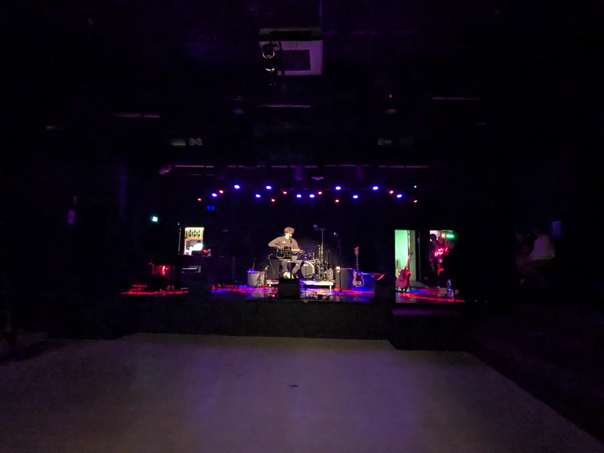

HZ · HBO-ICT · Year one
Xander
Schroevers
First-year HBO-ICT student at HZ University of Applied Sciences. Hands-on, curious, and heading for cybersecurity.
About me
Hi, I'm Xander.
I'm 19, I live in Arnemuiden, and I'm a first-year HBO-ICT student at the HZ.
Outside of college I play electric and classical guitar, produce music in FL Studio, dive, kitesurf, and build (or take apart) computers.
Where it started.
- Age 9
- Tablets, iPads and drones. My mom wouldn't buy Minecraft Pocket Edition, so I found another way to get it. My tablet got a couple of viruses. I got Minecraft.
- Age 13
- Built my first computer, and kept up with every new graphics card and processor after that.
- Then
- Dual-booted Linux. Wrote a 'utility' client for Minecraft Java on anarchy servers, which is where my interest in security and privacy began.
- After
- Hardened my own devices, tried TailsOS, jailbroke and modded my 3DS, and started making music in FL Studio.
- 2026
- Started HBO-ICT at HZ, to learn properly how all of it works. Why I chose ICT
End of side A.
Side B
I want to understand how things really work, and where they break.
- How
- By being hands-on: building, breaking and fixing things until I understand them.
- What
- Studying HBO-ICT at the HZ, and growing towards a career in cybersecurity.
Where I'm headed.
Security and privacy interest me most. After graduating I want to work in cybersecurity, as a security specialist or pentester: testing systems and networks for weaknesses, and writing clear reports that help a company fix them.
- Year one. A solid base in programming, networks and data. You cannot secure what you do not understand.
- Year two. Software Engineering, then a specialisation in security or infrastructure.
- Outside class. TryHackMe and beginner CTF challenges, starting with the Pre-Security path by April 2027.
- Next. An entry-level certification such as CompTIA Security+, and an internship with a security team.
What I'm proud of.
My study monitor. I type in a grade and it colours the row, counts my credits, works out my average and fills the bar towards the 45 EC Study Advice boundary.
- Credits
- 0 / 60 EC
- Average
- 0
- Graded
- 0 of 12
Read from the dashboard page when you opened this one.
Liner notes
That's the short version. The long one, with all the hobbies, the diving and the Minecraft viruses, is on my About me page.